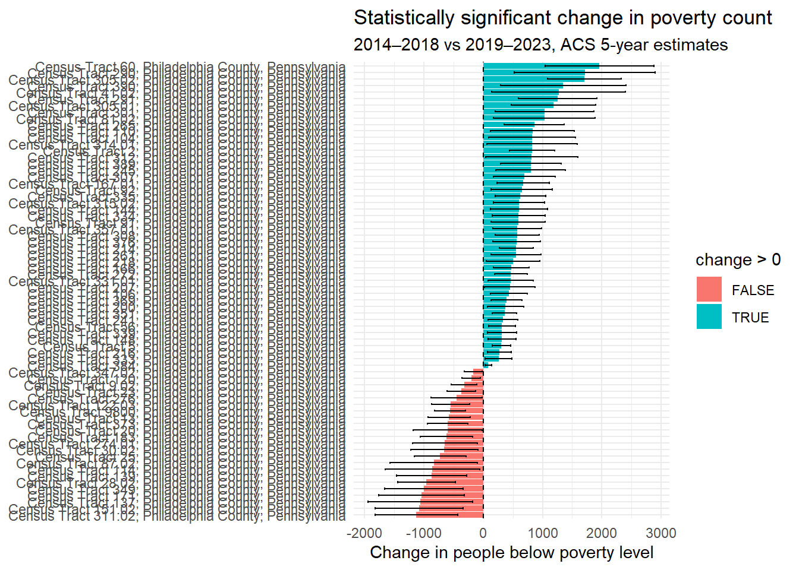
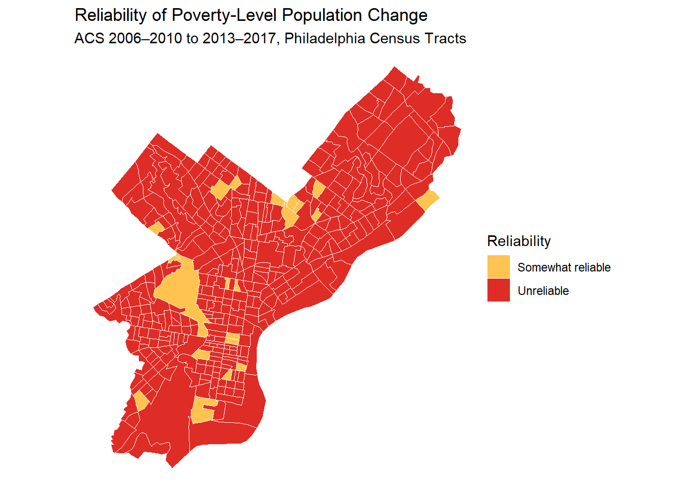

library(tidyverse)
library(tidycensus)
library(sf)Assignment 3: Poverty rate in Philly, how did it change over years (2006-2010 v. 2013-2017)?
how margin of error effect our judgement?
Setup
get_poverty <- function(yr) {
get_acs(
geography = "tract",
variables = c(
below_poverty = "B07012_002",
M_HH_income = "B19013_001"
),
state = "PA",
county = "Philadelphia",
year = yr,
survey = "acs5",
geometry = TRUE
) %>%
mutate(
period = paste0(yr - 4, "-", yr)
)
}poverty_change <- bind_rows(
get_poverty(2010),
get_poverty(2017)
)
|
| | 0%
|
|= | 1%
|
|== | 3%
|
|=== | 4%
|
|===== | 7%
|
|====== | 9%
|
|======= | 9%
|
|======= | 10%
|
|======== | 11%
|
|========= | 13%
|
|========== | 14%
|
|========== | 15%
|
|=========== | 16%
|
|============ | 16%
|
|============ | 18%
|
|============= | 19%
|
|============== | 20%
|
|================ | 22%
|
|================ | 24%
|
|================= | 25%
|
|=================== | 27%
|
|=================== | 28%
|
|===================== | 30%
|
|======================= | 33%
|
|========================= | 35%
|
|========================= | 36%
|
|========================== | 37%
|
|============================ | 40%
|
|============================= | 41%
|
|============================== | 42%
|
|============================== | 44%
|
|=============================== | 45%
|
|================================= | 47%
|
|=================================== | 50%
|
|==================================== | 51%
|
|====================================== | 54%
|
|======================================= | 56%
|
|======================================== | 57%
|
|========================================== | 60%
|
|=========================================== | 62%
|
|============================================== | 65%
|
|=============================================== | 68%
|
|================================================ | 69%
|
|================================================= | 70%
|
|================================================== | 71%
|
|=================================================== | 73%
|
|==================================================== | 74%
|
|===================================================== | 76%
|
|======================================================= | 79%
|
|========================================================= | 81%
|
|========================================================== | 82%
|
|============================================================ | 86%
|
|============================================================= | 87%
|
|============================================================== | 88%
|
|=============================================================== | 90%
|
|================================================================ | 92%
|
|================================================================== | 94%
|
|==================================================================== | 97%
|
|==================================================================== | 98%
|
|======================================================================| 100%
|
| | 0%
|
|== | 3%
|
|=== | 5%
|
|======== | 11%
|
|========== | 14%
|
|=========== | 16%
|
|============ | 17%
|
|============= | 19%
|
|============== | 21%
|
|=============== | 22%
|
|================= | 24%
|
|================== | 25%
|
|================== | 26%
|
|==================== | 28%
|
|===================== | 30%
|
|======================= | 33%
|
|======================== | 35%
|
|========================= | 36%
|
|=========================== | 38%
|
|============================= | 41%
|
|============================== | 44%
|
|================================ | 46%
|
|====================================== | 54%
|
|======================================== | 57%
|
|======================================== | 58%
|
|========================================= | 59%
|
|=========================================== | 61%
|
|============================================= | 64%
|
|============================================== | 65%
|
|============================================== | 66%
|
|================================================ | 69%
|
|================================================= | 70%
|
|================================================== | 72%
|
|=================================================== | 73%
|
|==================================================== | 74%
|
|===================================================== | 76%
|
|====================================================== | 77%
|
|======================================================== | 79%
|
|========================================================== | 83%
|
|============================================================ | 86%
|
|============================================================== | 89%
|
|================================================================ | 91%
|
|==================================================================== | 97%
|
|===================================================================== | 99%
|
|======================================================================| 100%poverty_wide <- poverty_change %>%
st_drop_geometry() %>%
select(GEOID, NAME, variable, period, estimate, moe) %>%
pivot_wider(
names_from = c(variable, period),
values_from = c(estimate, moe)
)
tract_geometry <- poverty_change %>%
select(GEOID, geometry) %>%
distinct(GEOID, .keep_all = TRUE)test_change <- function(data, variable, period_1, period_2) {
estimate_1 <- paste0("estimate_", variable, "_", period_1)
estimate_2 <- paste0("estimate_", variable, "_", period_2)
moe_1 <- paste0("moe_", variable, "_", period_1)
moe_2 <- paste0("moe_", variable, "_", period_2)
data %>%
mutate(
change = .data[[estimate_1]] - .data[[estimate_2]],
se_1 = .data[[moe_1]] / 1.645,
se_2 = .data[[moe_2]] / 1.645,
se_diff = sqrt(se_1^2 + se_2^2),
moe_diff = se_diff * 1.645,
z = change / se_diff,
significant = abs(z) > 1.645
)
}poverty_tested <- test_change(
poverty_wide,
variable = "below_poverty",
period_1 = "2013-2017",
period_2 = "2006-2010"
)
income_tested <- test_change(
poverty_wide,
variable = "M_HH_income",
period_1 = "2013-2017",
period_2 = "2006-2010"
)poverty_tested %>%
count(significant)# A tibble: 2 × 2
significant n
<lgl> <int>
1 FALSE 314
2 TRUE 70income_tested %>%
count(significant)# A tibble: 3 × 2
significant n
<lgl> <int>
1 FALSE 296
2 TRUE 78
3 NA 10poverty_tested %>%
filter(significant) %>%
mutate(NAME = str_remove(NAME, " County, New York")) %>%
ggplot(aes(x = reorder(NAME, change), y = change)) +
geom_col(aes(fill = change > 0)) +
geom_errorbar(aes(ymin = change - moe_diff,
ymax = change + moe_diff), width = 0.3) +
geom_hline(yintercept = 0, linetype = "dashed") +
coord_flip() +
theme_minimal() +
labs(title = "Statistically significant change in poverty count",
subtitle = "2014–2018 vs 2019–2023, ACS 5-year estimates",
x = NULL, y = "Change in people below poverty level")
library(gt)
reliability_table <- poverty_tested %>%
mutate(
cv = (moe_diff / 1.645) / abs(change) * 100,
dot = case_when(
cv < 12 ~ "🟢",
cv <= 40 ~ "🟡",
TRUE ~ "🔴"
),
flag = case_when(
cv < 12 ~ "Reliable",
cv <= 40 ~ "Somewhat reliable",
TRUE ~ "Unreliable"
),
NAME = str_remove(NAME, " County, New York")
) %>%
arrange(desc(cv)) %>%
select(dot, NAME, change, moe_diff, cv, flag, GEOID)
reliability_table %>%
gt() %>%
fmt_number(columns = c(change, moe_diff), decimals = 0) %>%
fmt_number(columns = cv, decimals = 1) %>%
cols_label(
dot = "",
NAME = "NAME",
change = "change",
moe_diff = "moe_diff",
cv = "CV (%)",
flag = "Reliability"
) %>%
cols_align(align = "center", columns = dot) %>%
tab_header(
title = "Population change of below 100% of the poverty level from ACS 2010 to ACS 2017",
subtitle = "City of Phialdelphia by Census Tract"
) %>%
tab_source_note(
"Reliability thresholds follow Jurjevich et al. (2018): CV < 12% reliable, 12–40% somewhat reliable, > 40% unreliable."
)| Population change of below 100% of the poverty level from ACS 2010 to ACS 2017 | ||||||
| City of Phialdelphia by Census Tract | ||||||
| NAME | change | moe_diff | CV (%) | Reliability | GEOID | |
|---|---|---|---|---|---|---|
| 🔴 | Census Tract 9803, Philadelphia County, Pennsylvania | 0 | 109 | Inf | Unreliable | 42101980300 |
| 🔴 | Census Tract 9804, Philadelphia County, Pennsylvania | 0 | 109 | Inf | Unreliable | 42101980400 |
| 🔴 | Census Tract 9805, Philadelphia County, Pennsylvania | 0 | 109 | Inf | Unreliable | 42101980500 |
| 🔴 | Census Tract 9807, Philadelphia County, Pennsylvania | 0 | 109 | Inf | Unreliable | 42101980700 |
| 🔴 | Census Tract 9808, Philadelphia County, Pennsylvania | 0 | 109 | Inf | Unreliable | 42101980800 |
| 🔴 | Census Tract 9809, Philadelphia County, Pennsylvania | 0 | 109 | Inf | Unreliable | 42101980900 |
| 🔴 | Census Tract 50, Philadelphia County, Pennsylvania | 0 | 109 | Inf | Unreliable | 42101005000 |
| 🔴 | Census Tract 169.01, Philadelphia County, Pennsylvania | 1 | 593 | 36,051.2 | Unreliable | 42101016901 |
| 🔴 | Census Tract 238, Philadelphia County, Pennsylvania | 1 | 321 | 19,515.5 | Unreliable | 42101023800 |
| 🔴 | Census Tract 138, Philadelphia County, Pennsylvania | 1 | 262 | 15,931.2 | Unreliable | 42101013800 |
| 🔴 | Census Tract 74, Philadelphia County, Pennsylvania | 4 | 710 | 10,794.1 | Unreliable | 42101007400 |
| 🔴 | Census Tract 381, Philadelphia County, Pennsylvania | −1 | 140 | 8,498.9 | Unreliable | 42101038100 |
| 🔴 | Census Tract 201.02, Philadelphia County, Pennsylvania | 4 | 554 | 8,414.7 | Unreliable | 42101020102 |
| 🔴 | Census Tract 385, Philadelphia County, Pennsylvania | 2 | 152 | 4,628.2 | Unreliable | 42101038500 |
| 🔴 | Census Tract 30.01, Philadelphia County, Pennsylvania | −7 | 512 | 4,447.0 | Unreliable | 42101003001 |
| 🔴 | Census Tract 174, Philadelphia County, Pennsylvania | −8 | 453 | 3,440.5 | Unreliable | 42101017400 |
| 🔴 | Census Tract 9891, Philadelphia County, Pennsylvania | 2 | 112 | 3,417.9 | Unreliable | 42101989100 |
| 🔴 | Census Tract 156, Philadelphia County, Pennsylvania | 7 | 390 | 3,388.6 | Unreliable | 42101015600 |
| 🔴 | Census Tract 86.01, Philadelphia County, Pennsylvania | −8 | 445 | 3,379.2 | Unreliable | 42101008601 |
| 🔴 | Census Tract 302, Philadelphia County, Pennsylvania | 17 | 920 | 3,291.3 | Unreliable | 42101030200 |
| 🔴 | Census Tract 387, Philadelphia County, Pennsylvania | −3 | 159 | 3,225.0 | Unreliable | 42101038700 |
| 🔴 | Census Tract 83.02, Philadelphia County, Pennsylvania | 13 | 661 | 3,089.5 | Unreliable | 42101008302 |
| 🔴 | Census Tract 73, Philadelphia County, Pennsylvania | 10 | 495 | 3,009.3 | Unreliable | 42101007300 |
| 🔴 | Census Tract 95, Philadelphia County, Pennsylvania | −12 | 556 | 2,815.7 | Unreliable | 42101009500 |
| 🔴 | Census Tract 71.02, Philadelphia County, Pennsylvania | −19 | 805 | 2,574.6 | Unreliable | 42101007102 |
| 🔴 | Census Tract 146, Philadelphia County, Pennsylvania | −9 | 351 | 2,367.9 | Unreliable | 42101014600 |
| 🔴 | Census Tract 188, Philadelphia County, Pennsylvania | 46 | 1,509 | 1,994.0 | Unreliable | 42101018800 |
| 🔴 | Census Tract 98.01, Philadelphia County, Pennsylvania | −13 | 412 | 1,928.2 | Unreliable | 42101009801 |
| 🔴 | Census Tract 140, Philadelphia County, Pennsylvania | 19 | 557 | 1,780.7 | Unreliable | 42101014000 |
| 🔴 | Census Tract 88.02, Philadelphia County, Pennsylvania | −45 | 1,115 | 1,505.9 | Unreliable | 42101008802 |
| 🔴 | Census Tract 239, Philadelphia County, Pennsylvania | −9 | 212 | 1,435.0 | Unreliable | 42101023900 |
| 🔴 | Census Tract 323, Philadelphia County, Pennsylvania | −12 | 276 | 1,397.3 | Unreliable | 42101032300 |
| 🔴 | Census Tract 14, Philadelphia County, Pennsylvania | 13 | 293 | 1,368.5 | Unreliable | 42101001400 |
| 🔴 | Census Tract 177.02, Philadelphia County, Pennsylvania | 45 | 1,004 | 1,356.2 | Unreliable | 42101017702 |
| 🔴 | Census Tract 319, Philadelphia County, Pennsylvania | −25 | 540 | 1,313.5 | Unreliable | 42101031900 |
| 🔴 | Census Tract 9.01, Philadelphia County, Pennsylvania | −11 | 232 | 1,284.5 | Unreliable | 42101000901 |
| 🔴 | Census Tract 125, Philadelphia County, Pennsylvania | −19 | 389 | 1,245.9 | Unreliable | 42101012500 |
| 🔴 | Census Tract 299, Philadelphia County, Pennsylvania | 36 | 736 | 1,242.3 | Unreliable | 42101029900 |
| 🔴 | Census Tract 133, Philadelphia County, Pennsylvania | 31 | 615 | 1,206.5 | Unreliable | 42101013300 |
| 🔴 | Census Tract 348.01, Philadelphia County, Pennsylvania | −27 | 505 | 1,136.8 | Unreliable | 42101034801 |
| 🔴 | Census Tract 55, Philadelphia County, Pennsylvania | −50 | 919 | 1,117.2 | Unreliable | 42101005500 |
| 🔴 | Census Tract 3, Philadelphia County, Pennsylvania | 9 | 155 | 1,046.5 | Unreliable | 42101000300 |
| 🔴 | Census Tract 29, Philadelphia County, Pennsylvania | 34 | 579 | 1,035.8 | Unreliable | 42101002900 |
| 🔴 | Census Tract 306, Philadelphia County, Pennsylvania | 34 | 501 | 895.8 | Unreliable | 42101030600 |
| 🔴 | Census Tract 365.01, Philadelphia County, Pennsylvania | −38 | 553 | 884.3 | Unreliable | 42101036501 |
| 🔴 | Census Tract 7, Philadelphia County, Pennsylvania | 22 | 312 | 861.7 | Unreliable | 42101000700 |
| 🔴 | Census Tract 206, Philadelphia County, Pennsylvania | −13 | 181 | 844.7 | Unreliable | 42101020600 |
| 🔴 | Census Tract 353.02, Philadelphia County, Pennsylvania | −26 | 347 | 810.4 | Unreliable | 42101035302 |
| 🔴 | Census Tract 177.01, Philadelphia County, Pennsylvania | 64 | 789 | 749.2 | Unreliable | 42101017701 |
| 🔴 | Census Tract 243, Philadelphia County, Pennsylvania | 49 | 595 | 738.7 | Unreliable | 42101024300 |
| 🔴 | Census Tract 240, Philadelphia County, Pennsylvania | −37 | 430 | 705.9 | Unreliable | 42101024000 |
| 🔴 | Census Tract 313, Philadelphia County, Pennsylvania | −102 | 1,165 | 694.4 | Unreliable | 42101031300 |
| 🔴 | Census Tract 231, Philadelphia County, Pennsylvania | 10 | 110 | 666.0 | Unreliable | 42101023100 |
| 🔴 | Census Tract 112, Philadelphia County, Pennsylvania | 102 | 1,117 | 665.6 | Unreliable | 42101011200 |
| 🔴 | Census Tract 172.02, Philadelphia County, Pennsylvania | 55 | 586 | 648.1 | Unreliable | 42101017202 |
| 🔴 | Census Tract 134.01, Philadelphia County, Pennsylvania | 12 | 127 | 640.9 | Unreliable | 42101013401 |
| 🔴 | Census Tract 317, Philadelphia County, Pennsylvania | 64 | 651 | 617.9 | Unreliable | 42101031700 |
| 🔴 | Census Tract 42.02, Philadelphia County, Pennsylvania | 54 | 534 | 600.7 | Unreliable | 42101004202 |
| 🔴 | Census Tract 364, Philadelphia County, Pennsylvania | −32 | 314 | 596.3 | Unreliable | 42101036400 |
| 🔴 | Census Tract 355, Philadelphia County, Pennsylvania | 55 | 538 | 594.8 | Unreliable | 42101035500 |
| 🔴 | Census Tract 72, Philadelphia County, Pennsylvania | −84 | 737 | 533.5 | Unreliable | 42101007200 |
| 🔴 | Census Tract 279.02, Philadelphia County, Pennsylvania | −60 | 523 | 529.8 | Unreliable | 42101027902 |
| 🔴 | Census Tract 77, Philadelphia County, Pennsylvania | 35 | 305 | 529.4 | Unreliable | 42101007700 |
| 🔴 | Census Tract 236, Philadelphia County, Pennsylvania | −40 | 339 | 515.2 | Unreliable | 42101023600 |
| 🔴 | Census Tract 9801, Philadelphia County, Pennsylvania | 13 | 110 | 513.9 | Unreliable | 42101980100 |
| 🔴 | Census Tract 168, Philadelphia County, Pennsylvania | 87 | 735 | 513.4 | Unreliable | 42101016800 |
| 🔴 | Census Tract 108, Philadelphia County, Pennsylvania | −86 | 726 | 513.0 | Unreliable | 42101010800 |
| 🔴 | Census Tract 172.01, Philadelphia County, Pennsylvania | 86 | 721 | 509.4 | Unreliable | 42101017201 |
| 🔴 | Census Tract 249, Philadelphia County, Pennsylvania | 89 | 744 | 507.9 | Unreliable | 42101024900 |
| 🔴 | Census Tract 294, Philadelphia County, Pennsylvania | 88 | 696 | 480.6 | Unreliable | 42101029400 |
| 🔴 | Census Tract 40.01, Philadelphia County, Pennsylvania | 57 | 450 | 480.2 | Unreliable | 42101004001 |
| 🔴 | Census Tract 213, Philadelphia County, Pennsylvania | 28 | 218 | 473.6 | Unreliable | 42101021300 |
| 🔴 | Census Tract 122.04, Philadelphia County, Pennsylvania | −52 | 401 | 468.4 | Unreliable | 42101012204 |
| 🔴 | Census Tract 176.01, Philadelphia County, Pennsylvania | 138 | 1,051 | 462.9 | Unreliable | 42101017601 |
| 🔴 | Census Tract 180.02, Philadelphia County, Pennsylvania | 98 | 742 | 460.1 | Unreliable | 42101018002 |
| 🔴 | Census Tract 197, Philadelphia County, Pennsylvania | −166 | 1,237 | 452.9 | Unreliable | 42101019700 |
| 🔴 | Census Tract 135, Philadelphia County, Pennsylvania | −53 | 376 | 431.6 | Unreliable | 42101013500 |
| 🔴 | Census Tract 217, Philadelphia County, Pennsylvania | 25 | 174 | 423.7 | Unreliable | 42101021700 |
| 🔴 | Census Tract 153, Philadelphia County, Pennsylvania | 91 | 633 | 423.1 | Unreliable | 42101015300 |
| 🔴 | Census Tract 280, Philadelphia County, Pennsylvania | −87 | 577 | 403.4 | Unreliable | 42101028000 |
| 🔴 | Census Tract 337.01, Philadelphia County, Pennsylvania | −102 | 674 | 401.6 | Unreliable | 42101033701 |
| 🔴 | Census Tract 4.01, Philadelphia County, Pennsylvania | −43 | 281 | 396.7 | Unreliable | 42101000401 |
| 🔴 | Census Tract 201.01, Philadelphia County, Pennsylvania | 111 | 714 | 391.2 | Unreliable | 42101020101 |
| 🔴 | Census Tract 119, Philadelphia County, Pennsylvania | −139 | 888 | 388.3 | Unreliable | 42101011900 |
| 🔴 | Census Tract 258, Philadelphia County, Pennsylvania | −16 | 98 | 374.2 | Unreliable | 42101025800 |
| 🔴 | Census Tract 195.02, Philadelphia County, Pennsylvania | −121 | 710 | 356.9 | Unreliable | 42101019502 |
| 🔴 | Census Tract 141, Philadelphia County, Pennsylvania | −113 | 656 | 352.7 | Unreliable | 42101014100 |
| 🔴 | Census Tract 289.02, Philadelphia County, Pennsylvania | 149 | 850 | 346.9 | Unreliable | 42101028902 |
| 🔴 | Census Tract 32, Philadelphia County, Pennsylvania | −114 | 647 | 345.1 | Unreliable | 42101003200 |
| 🔴 | Census Tract 273, Philadelphia County, Pennsylvania | −114 | 635 | 338.7 | Unreliable | 42101027300 |
| 🔴 | Census Tract 208, Philadelphia County, Pennsylvania | 50 | 270 | 328.6 | Unreliable | 42101020800 |
| 🔴 | Census Tract 136.02, Philadelphia County, Pennsylvania | −55 | 282 | 311.4 | Unreliable | 42101013602 |
| 🔴 | Census Tract 202, Philadelphia County, Pennsylvania | 156 | 778 | 303.1 | Unreliable | 42101020200 |
| 🔴 | Census Tract 246, Philadelphia County, Pennsylvania | −104 | 516 | 301.6 | Unreliable | 42101024600 |
| 🔴 | Census Tract 117, Philadelphia County, Pennsylvania | 53 | 262 | 300.9 | Unreliable | 42101011700 |
| 🔴 | Census Tract 66, Philadelphia County, Pennsylvania | −119 | 588 | 300.5 | Unreliable | 42101006600 |
| 🔴 | Census Tract 136.01, Philadelphia County, Pennsylvania | −13 | 64 | 298.4 | Unreliable | 42101013601 |
| 🔴 | Census Tract 300, Philadelphia County, Pennsylvania | −208 | 966 | 282.3 | Unreliable | 42101030000 |
| 🔴 | Census Tract 67, Philadelphia County, Pennsylvania | −181 | 839 | 281.9 | Unreliable | 42101006700 |
| 🔴 | Census Tract 83.01, Philadelphia County, Pennsylvania | −96 | 444 | 281.1 | Unreliable | 42101008301 |
| 🔴 | Census Tract 94, Philadelphia County, Pennsylvania | 142 | 636 | 272.1 | Unreliable | 42101009400 |
| 🔴 | Census Tract 132, Philadelphia County, Pennsylvania | −88 | 385 | 266.1 | Unreliable | 42101013200 |
| 🔴 | Census Tract 161, Philadelphia County, Pennsylvania | −191 | 834 | 265.3 | Unreliable | 42101016100 |
| 🔴 | Census Tract 8.04, Philadelphia County, Pennsylvania | −65 | 284 | 265.2 | Unreliable | 42101000804 |
| 🔴 | Census Tract 362.01, Philadelphia County, Pennsylvania | −53 | 220 | 252.0 | Unreliable | 42101036201 |
| 🔴 | Census Tract 145, Philadelphia County, Pennsylvania | −92 | 380 | 251.4 | Unreliable | 42101014500 |
| 🔴 | Census Tract 209, Philadelphia County, Pennsylvania | −68 | 281 | 251.0 | Unreliable | 42101020900 |
| 🔴 | Census Tract 113, Philadelphia County, Pennsylvania | 132 | 542 | 249.8 | Unreliable | 42101011300 |
| 🔴 | Census Tract 79, Philadelphia County, Pennsylvania | −115 | 466 | 246.2 | Unreliable | 42101007900 |
| 🔴 | Census Tract 199, Philadelphia County, Pennsylvania | 229 | 926 | 245.7 | Unreliable | 42101019900 |
| 🔴 | Census Tract 283, Philadelphia County, Pennsylvania | −242 | 970 | 243.7 | Unreliable | 42101028300 |
| 🔴 | Census Tract 22, Philadelphia County, Pennsylvania | −105 | 418 | 242.2 | Unreliable | 42101002200 |
| 🔴 | Census Tract 38, Philadelphia County, Pennsylvania | 50 | 199 | 241.8 | Unreliable | 42101003800 |
| 🔴 | Census Tract 1, Philadelphia County, Pennsylvania | −72 | 286 | 241.7 | Unreliable | 42101000100 |
| 🔴 | Census Tract 36, Philadelphia County, Pennsylvania | −313 | 1,237 | 240.2 | Unreliable | 42101003600 |
| 🔴 | Census Tract 253, Philadelphia County, Pennsylvania | 116 | 448 | 234.9 | Unreliable | 42101025300 |
| 🔴 | Census Tract 205, Philadelphia County, Pennsylvania | −100 | 386 | 234.9 | Unreliable | 42101020500 |
| 🔴 | Census Tract 71.01, Philadelphia County, Pennsylvania | −132 | 508 | 234.2 | Unreliable | 42101007101 |
| 🔴 | Census Tract 263.02, Philadelphia County, Pennsylvania | 131 | 503 | 233.2 | Unreliable | 42101026302 |
| 🔴 | Census Tract 337.02, Philadelphia County, Pennsylvania | 110 | 422 | 233.2 | Unreliable | 42101033702 |
| 🔴 | Census Tract 288, Philadelphia County, Pennsylvania | 185 | 707 | 232.3 | Unreliable | 42101028800 |
| 🔴 | Census Tract 118, Philadelphia County, Pennsylvania | 216 | 799 | 224.9 | Unreliable | 42101011800 |
| 🔴 | Census Tract 115, Philadelphia County, Pennsylvania | −168 | 614 | 222.3 | Unreliable | 42101011500 |
| 🔴 | Census Tract 380, Philadelphia County, Pennsylvania | 101 | 366 | 220.4 | Unreliable | 42101038000 |
| 🔴 | Census Tract 357.02, Philadelphia County, Pennsylvania | 129 | 467 | 219.9 | Unreliable | 42101035702 |
| 🔴 | Census Tract 378, Philadelphia County, Pennsylvania | 69 | 245 | 215.7 | Unreliable | 42101037800 |
| 🔴 | Census Tract 242, Philadelphia County, Pennsylvania | −166 | 584 | 213.7 | Unreliable | 42101024200 |
| 🔴 | Census Tract 82, Philadelphia County, Pennsylvania | −296 | 1,035 | 212.6 | Unreliable | 42101008200 |
| 🔴 | Census Tract 180.01, Philadelphia County, Pennsylvania | 88 | 307 | 211.8 | Unreliable | 42101018001 |
| 🔴 | Census Tract 329, Philadelphia County, Pennsylvania | 123 | 428 | 211.5 | Unreliable | 42101032900 |
| 🔴 | Census Tract 341, Philadelphia County, Pennsylvania | −150 | 471 | 191.0 | Unreliable | 42101034100 |
| 🔴 | Census Tract 353.01, Philadelphia County, Pennsylvania | −121 | 375 | 188.5 | Unreliable | 42101035301 |
| 🔴 | Census Tract 31, Philadelphia County, Pennsylvania | −179 | 550 | 186.7 | Unreliable | 42101003100 |
| 🔴 | Census Tract 69, Philadelphia County, Pennsylvania | 219 | 672 | 186.4 | Unreliable | 42101006900 |
| 🔴 | Census Tract 274.02, Philadelphia County, Pennsylvania | −353 | 1,077 | 185.5 | Unreliable | 42101027402 |
| 🔴 | Census Tract 178, Philadelphia County, Pennsylvania | −354 | 1,075 | 184.6 | Unreliable | 42101017800 |
| 🔴 | Census Tract 361, Philadelphia County, Pennsylvania | 140 | 424 | 183.9 | Unreliable | 42101036100 |
| 🔴 | Census Tract 80, Philadelphia County, Pennsylvania | 188 | 563 | 182.1 | Unreliable | 42101008000 |
| 🔴 | Census Tract 122.01, Philadelphia County, Pennsylvania | −150 | 437 | 177.2 | Unreliable | 42101012201 |
| 🔴 | Census Tract 42.01, Philadelphia County, Pennsylvania | −293 | 848 | 176.0 | Unreliable | 42101004201 |
| 🔴 | Census Tract 170, Philadelphia County, Pennsylvania | −156 | 439 | 171.1 | Unreliable | 42101017000 |
| 🔴 | Census Tract 195.01, Philadelphia County, Pennsylvania | 349 | 981 | 170.8 | Unreliable | 42101019501 |
| 🔴 | Census Tract 151.01, Philadelphia County, Pennsylvania | 207 | 578 | 169.9 | Unreliable | 42101015101 |
| 🔴 | Census Tract 204, Philadelphia County, Pennsylvania | 165 | 456 | 168.0 | Unreliable | 42101020400 |
| 🔴 | Census Tract 41.01, Philadelphia County, Pennsylvania | 389 | 1,070 | 167.2 | Unreliable | 42101004101 |
| 🔴 | Census Tract 87.01, Philadelphia County, Pennsylvania | −195 | 535 | 166.8 | Unreliable | 42101008701 |
| 🔴 | Census Tract 169.02, Philadelphia County, Pennsylvania | 356 | 973 | 166.2 | Unreliable | 42101016902 |
| 🔴 | Census Tract 164, Philadelphia County, Pennsylvania | 259 | 705 | 165.5 | Unreliable | 42101016400 |
| 🔴 | Census Tract 191, Philadelphia County, Pennsylvania | 400 | 1,079 | 164.0 | Unreliable | 42101019100 |
| 🔴 | Census Tract 54, Philadelphia County, Pennsylvania | 53 | 142 | 162.3 | Unreliable | 42101005400 |
| 🔴 | Census Tract 311.01, Philadelphia County, Pennsylvania | 245 | 654 | 162.2 | Unreliable | 42101031101 |
| 🔴 | Census Tract 39.01, Philadelphia County, Pennsylvania | 240 | 637 | 161.4 | Unreliable | 42101003901 |
| 🔴 | Census Tract 8.03, Philadelphia County, Pennsylvania | −86 | 228 | 161.2 | Unreliable | 42101000803 |
| 🔴 | Census Tract 149, Philadelphia County, Pennsylvania | −231 | 612 | 161.1 | Unreliable | 42101014900 |
| 🔴 | Census Tract 33, Philadelphia County, Pennsylvania | −453 | 1,183 | 158.8 | Unreliable | 42101003300 |
| 🔴 | Census Tract 16, Philadelphia County, Pennsylvania | −49 | 127 | 157.6 | Unreliable | 42101001600 |
| 🔴 | Census Tract 285, Philadelphia County, Pennsylvania | 193 | 499 | 157.2 | Unreliable | 42101028500 |
| 🔴 | Census Tract 64, Philadelphia County, Pennsylvania | −326 | 840 | 156.6 | Unreliable | 42101006400 |
| 🔴 | Census Tract 289.01, Philadelphia County, Pennsylvania | −300 | 768 | 155.6 | Unreliable | 42101028901 |
| 🔴 | Census Tract 287, Philadelphia County, Pennsylvania | −176 | 449 | 155.0 | Unreliable | 42101028700 |
| 🔴 | Census Tract 9802, Philadelphia County, Pennsylvania | −33 | 83 | 153.6 | Unreliable | 42101980200 |
| 🔴 | Census Tract 298, Philadelphia County, Pennsylvania | 230 | 581 | 153.4 | Unreliable | 42101029800 |
| 🔴 | Census Tract 252, Philadelphia County, Pennsylvania | 506 | 1,271 | 152.6 | Unreliable | 42101025200 |
| 🔴 | Census Tract 102, Philadelphia County, Pennsylvania | 271 | 669 | 150.0 | Unreliable | 42101010200 |
| 🔴 | Census Tract 12.02, Philadelphia County, Pennsylvania | −100 | 244 | 148.5 | Unreliable | 42101001202 |
| 🔴 | Census Tract 259, Philadelphia County, Pennsylvania | 137 | 332 | 147.5 | Unreliable | 42101025900 |
| 🔴 | Census Tract 362.02, Philadelphia County, Pennsylvania | 151 | 365 | 147.0 | Unreliable | 42101036202 |
| 🔴 | Census Tract 326, Philadelphia County, Pennsylvania | 351 | 842 | 145.9 | Unreliable | 42101032600 |
| 🔴 | Census Tract 284, Philadelphia County, Pennsylvania | 308 | 737 | 145.6 | Unreliable | 42101028400 |
| 🔴 | Census Tract 292, Philadelphia County, Pennsylvania | 238 | 570 | 145.5 | Unreliable | 42101029200 |
| 🔴 | Census Tract 84, Philadelphia County, Pennsylvania | −328 | 784 | 145.3 | Unreliable | 42101008400 |
| 🔴 | Census Tract 10.02, Philadelphia County, Pennsylvania | −152 | 363 | 145.1 | Unreliable | 42101001002 |
| 🔴 | Census Tract 158, Philadelphia County, Pennsylvania | 194 | 460 | 144.1 | Unreliable | 42101015800 |
| 🔴 | Census Tract 175, Philadelphia County, Pennsylvania | −463 | 1,087 | 142.7 | Unreliable | 42101017500 |
| 🔴 | Census Tract 63, Philadelphia County, Pennsylvania | 350 | 815 | 141.5 | Unreliable | 42101006300 |
| 🔴 | Census Tract 27.01, Philadelphia County, Pennsylvania | 269 | 626 | 141.4 | Unreliable | 42101002701 |
| 🔴 | Census Tract 142, Philadelphia County, Pennsylvania | −147 | 341 | 141.1 | Unreliable | 42101014200 |
| 🔴 | Census Tract 262, Philadelphia County, Pennsylvania | −125 | 288 | 140.0 | Unreliable | 42101026200 |
| 🔴 | Census Tract 103, Philadelphia County, Pennsylvania | 238 | 546 | 139.5 | Unreliable | 42101010300 |
| 🔴 | Census Tract 39.02, Philadelphia County, Pennsylvania | −248 | 561 | 137.6 | Unreliable | 42101003902 |
| 🔴 | Census Tract 12.01, Philadelphia County, Pennsylvania | −66 | 149 | 137.2 | Unreliable | 42101001201 |
| 🔴 | Census Tract 367, Philadelphia County, Pennsylvania | −78 | 176 | 136.8 | Unreliable | 42101036700 |
| 🔴 | Census Tract 62, Philadelphia County, Pennsylvania | 355 | 797 | 136.4 | Unreliable | 42101006200 |
| 🔴 | Census Tract 278, Philadelphia County, Pennsylvania | 305 | 680 | 135.5 | Unreliable | 42101027800 |
| 🔴 | Census Tract 192, Philadelphia County, Pennsylvania | −632 | 1,404 | 135.0 | Unreliable | 42101019200 |
| 🔴 | Census Tract 163, Philadelphia County, Pennsylvania | 345 | 759 | 133.7 | Unreliable | 42101016300 |
| 🔴 | Census Tract 101, Philadelphia County, Pennsylvania | 480 | 1,051 | 133.1 | Unreliable | 42101010100 |
| 🔴 | Census Tract 293, Philadelphia County, Pennsylvania | 291 | 637 | 133.1 | Unreliable | 42101029300 |
| 🔴 | Census Tract 348.03, Philadelphia County, Pennsylvania | −91 | 199 | 132.9 | Unreliable | 42101034803 |
| 🔴 | Census Tract 28.01, Philadelphia County, Pennsylvania | −259 | 566 | 132.8 | Unreliable | 42101002801 |
| 🔴 | Census Tract 363.03, Philadelphia County, Pennsylvania | −186 | 406 | 132.7 | Unreliable | 42101036303 |
| 🔴 | Census Tract 362.03, Philadelphia County, Pennsylvania | −125 | 270 | 131.2 | Unreliable | 42101036203 |
| 🔴 | Census Tract 379, Philadelphia County, Pennsylvania | −224 | 472 | 128.1 | Unreliable | 42101037900 |
| 🔴 | Census Tract 27.02, Philadelphia County, Pennsylvania | 184 | 384 | 126.8 | Unreliable | 42101002702 |
| 🔴 | Census Tract 377, Philadelphia County, Pennsylvania | −387 | 806 | 126.7 | Unreliable | 42101037700 |
| 🔴 | Census Tract 356.01, Philadelphia County, Pennsylvania | −148 | 307 | 126.2 | Unreliable | 42101035601 |
| 🔴 | Census Tract 107, Philadelphia County, Pennsylvania | 253 | 524 | 125.9 | Unreliable | 42101010700 |
| 🔴 | Census Tract 37.01, Philadelphia County, Pennsylvania | −481 | 988 | 124.8 | Unreliable | 42101003701 |
| 🔴 | Census Tract 340, Philadelphia County, Pennsylvania | 112 | 229 | 124.3 | Unreliable | 42101034000 |
| 🔴 | Census Tract 98.02, Philadelphia County, Pennsylvania | 388 | 791 | 123.9 | Unreliable | 42101009802 |
| 🔴 | Census Tract 383, Philadelphia County, Pennsylvania | 286 | 581 | 123.6 | Unreliable | 42101038300 |
| 🔴 | Census Tract 11.02, Philadelphia County, Pennsylvania | 114 | 231 | 123.4 | Unreliable | 42101001102 |
| 🔴 | Census Tract 314.02, Philadelphia County, Pennsylvania | 330 | 667 | 122.9 | Unreliable | 42101031402 |
| 🔴 | Census Tract 347.01, Philadelphia County, Pennsylvania | 215 | 433 | 122.4 | Unreliable | 42101034701 |
| 🔴 | Census Tract 147, Philadelphia County, Pennsylvania | −334 | 672 | 122.3 | Unreliable | 42101014700 |
| 🔴 | Census Tract 9806, Philadelphia County, Pennsylvania | −9 | 17 | 116.2 | Unreliable | 42101980600 |
| 🔴 | Census Tract 344, Philadelphia County, Pennsylvania | −196 | 370 | 114.7 | Unreliable | 42101034400 |
| 🔴 | Census Tract 78, Philadelphia County, Pennsylvania | 241 | 452 | 114.1 | Unreliable | 42101007800 |
| 🔴 | Census Tract 211, Philadelphia County, Pennsylvania | 99 | 184 | 112.9 | Unreliable | 42101021100 |
| 🔴 | Census Tract 247, Philadelphia County, Pennsylvania | 293 | 543 | 112.6 | Unreliable | 42101024700 |
| 🔴 | Census Tract 81.01, Philadelphia County, Pennsylvania | 336 | 621 | 112.3 | Unreliable | 42101008101 |
| 🔴 | Census Tract 338, Philadelphia County, Pennsylvania | 266 | 488 | 111.5 | Unreliable | 42101033800 |
| 🔴 | Census Tract 321, Philadelphia County, Pennsylvania | 407 | 743 | 111.0 | Unreliable | 42101032100 |
| 🔴 | Census Tract 309, Philadelphia County, Pennsylvania | 323 | 584 | 109.9 | Unreliable | 42101030900 |
| 🔴 | Census Tract 179, Philadelphia County, Pennsylvania | −500 | 898 | 109.2 | Unreliable | 42101017900 |
| 🔴 | Census Tract 37.02, Philadelphia County, Pennsylvania | −244 | 438 | 109.1 | Unreliable | 42101003702 |
| 🔴 | Census Tract 345.01, Philadelphia County, Pennsylvania | 172 | 307 | 108.4 | Unreliable | 42101034501 |
| 🔴 | Census Tract 260, Philadelphia County, Pennsylvania | 136 | 242 | 108.1 | Unreliable | 42101026000 |
| 🔴 | Census Tract 264, Philadelphia County, Pennsylvania | −284 | 504 | 107.8 | Unreliable | 42101026400 |
| 🔴 | Census Tract 93, Philadelphia County, Pennsylvania | −376 | 663 | 107.1 | Unreliable | 42101009300 |
| 🔴 | Census Tract 215, Philadelphia County, Pennsylvania | 222 | 389 | 106.4 | Unreliable | 42101021500 |
| 🔴 | Census Tract 152, Philadelphia County, Pennsylvania | −712 | 1,242 | 106.1 | Unreliable | 42101015200 |
| 🔴 | Census Tract 237, Philadelphia County, Pennsylvania | −200 | 346 | 105.2 | Unreliable | 42101023700 |
| 🔴 | Census Tract 219, Philadelphia County, Pennsylvania | −57 | 98 | 105.0 | Unreliable | 42101021900 |
| 🔴 | Census Tract 281, Philadelphia County, Pennsylvania | 360 | 618 | 104.4 | Unreliable | 42101028100 |
| 🔴 | Census Tract 386, Philadelphia County, Pennsylvania | −60 | 102 | 103.0 | Unreliable | 42101038600 |
| 🔴 | Census Tract 388, Philadelphia County, Pennsylvania | −136 | 230 | 103.0 | Unreliable | 42101038800 |
| 🔴 | Census Tract 210, Philadelphia County, Pennsylvania | 369 | 617 | 101.6 | Unreliable | 42101021000 |
| 🔴 | Census Tract 363.02, Philadelphia County, Pennsylvania | −174 | 290 | 101.5 | Unreliable | 42101036302 |
| 🔴 | Census Tract 220, Philadelphia County, Pennsylvania | −28 | 46 | 100.9 | Unreliable | 42101022000 |
| 🔴 | Census Tract 61, Philadelphia County, Pennsylvania | 283 | 468 | 100.6 | Unreliable | 42101006100 |
| 🔴 | Census Tract 266, Philadelphia County, Pennsylvania | 356 | 588 | 100.4 | Unreliable | 42101026600 |
| 🔴 | Census Tract 21, Philadelphia County, Pennsylvania | 175 | 288 | 99.9 | Unreliable | 42101002100 |
| 🔴 | Census Tract 254, Philadelphia County, Pennsylvania | 156 | 255 | 99.4 | Unreliable | 42101025400 |
| 🔴 | Census Tract 269, Philadelphia County, Pennsylvania | −143 | 233 | 98.9 | Unreliable | 42101026900 |
| 🔴 | Census Tract 282, Philadelphia County, Pennsylvania | 368 | 598 | 98.8 | Unreliable | 42101028200 |
| 🔴 | Census Tract 248, Philadelphia County, Pennsylvania | −245 | 395 | 98.1 | Unreliable | 42101024800 |
| 🔴 | Census Tract 279.01, Philadelphia County, Pennsylvania | 401 | 639 | 96.8 | Unreliable | 42101027901 |
| 🔴 | Census Tract 190, Philadelphia County, Pennsylvania | −808 | 1,276 | 96.0 | Unreliable | 42101019000 |
| 🔴 | Census Tract 345.02, Philadelphia County, Pennsylvania | 272 | 422 | 94.4 | Unreliable | 42101034502 |
| 🔴 | Census Tract 131, Philadelphia County, Pennsylvania | 194 | 301 | 94.3 | Unreliable | 42101013100 |
| 🔴 | Census Tract 331.02, Philadelphia County, Pennsylvania | −472 | 731 | 94.2 | Unreliable | 42101033102 |
| 🔴 | Census Tract 40.02, Philadelphia County, Pennsylvania | −215 | 331 | 93.6 | Unreliable | 42101004002 |
| 🔴 | Census Tract 263.01, Philadelphia County, Pennsylvania | 193 | 295 | 92.9 | Unreliable | 42101026301 |
| 🔴 | Census Tract 203, Philadelphia County, Pennsylvania | 402 | 610 | 92.3 | Unreliable | 42101020300 |
| 🔴 | Census Tract 86.02, Philadelphia County, Pennsylvania | −249 | 375 | 91.5 | Unreliable | 42101008602 |
| 🔴 | Census Tract 310, Philadelphia County, Pennsylvania | 639 | 954 | 90.7 | Unreliable | 42101031000 |
| 🔴 | Census Tract 336, Philadelphia County, Pennsylvania | 469 | 699 | 90.7 | Unreliable | 42101033600 |
| 🔴 | Census Tract 325, Philadelphia County, Pennsylvania | 722 | 1,076 | 90.6 | Unreliable | 42101032500 |
| 🔴 | Census Tract 162, Philadelphia County, Pennsylvania | 269 | 400 | 90.5 | Unreliable | 42101016200 |
| 🔴 | Census Tract 90, Philadelphia County, Pennsylvania | 323 | 478 | 89.9 | Unreliable | 42101009000 |
| 🔴 | Census Tract 165, Philadelphia County, Pennsylvania | 426 | 626 | 89.4 | Unreliable | 42101016500 |
| 🔴 | Census Tract 372, Philadelphia County, Pennsylvania | 266 | 391 | 89.3 | Unreliable | 42101037200 |
| 🔴 | Census Tract 358, Philadelphia County, Pennsylvania | 202 | 292 | 87.9 | Unreliable | 42101035800 |
| 🔴 | Census Tract 244, Philadelphia County, Pennsylvania | 323 | 467 | 87.9 | Unreliable | 42101024400 |
| 🔴 | Census Tract 11.01, Philadelphia County, Pennsylvania | −298 | 431 | 87.9 | Unreliable | 42101001101 |
| 🔴 | Census Tract 6, Philadelphia County, Pennsylvania | −102 | 147 | 87.4 | Unreliable | 42101000600 |
| 🔴 | Census Tract 382, Philadelphia County, Pennsylvania | −321 | 460 | 87.1 | Unreliable | 42101038200 |
| 🔴 | Census Tract 85, Philadelphia County, Pennsylvania | 656 | 940 | 87.1 | Unreliable | 42101008500 |
| 🔴 | Census Tract 352, Philadelphia County, Pennsylvania | 122 | 174 | 86.9 | Unreliable | 42101035200 |
| 🔴 | Census Tract 255, Philadelphia County, Pennsylvania | 96 | 136 | 86.1 | Unreliable | 42101025500 |
| 🔴 | Census Tract 4.02, Philadelphia County, Pennsylvania | −122 | 173 | 86.0 | Unreliable | 42101000402 |
| 🔴 | Census Tract 320, Philadelphia County, Pennsylvania | −655 | 926 | 85.9 | Unreliable | 42101032000 |
| 🔴 | Census Tract 268, Philadelphia County, Pennsylvania | 350 | 494 | 85.8 | Unreliable | 42101026800 |
| 🔴 | Census Tract 235, Philadelphia County, Pennsylvania | 70 | 99 | 85.8 | Unreliable | 42101023500 |
| 🔴 | Census Tract 134.02, Philadelphia County, Pennsylvania | −188 | 265 | 85.6 | Unreliable | 42101013402 |
| 🔴 | Census Tract 359, Philadelphia County, Pennsylvania | 153 | 214 | 85.2 | Unreliable | 42101035900 |
| 🔴 | Census Tract 286, Philadelphia County, Pennsylvania | −770 | 1,074 | 84.8 | Unreliable | 42101028600 |
| 🔴 | Census Tract 270, Philadelphia County, Pennsylvania | 145 | 201 | 84.2 | Unreliable | 42101027000 |
| 🔴 | Census Tract 121, Philadelphia County, Pennsylvania | 259 | 358 | 83.9 | Unreliable | 42101012100 |
| 🔴 | Census Tract 275, Philadelphia County, Pennsylvania | 426 | 587 | 83.8 | Unreliable | 42101027500 |
| 🔴 | Census Tract 65, Philadelphia County, Pennsylvania | −559 | 764 | 83.1 | Unreliable | 42101006500 |
| 🔴 | Census Tract 15, Philadelphia County, Pennsylvania | 185 | 251 | 82.4 | Unreliable | 42101001500 |
| 🔴 | Census Tract 176.02, Philadelphia County, Pennsylvania | 630 | 853 | 82.3 | Unreliable | 42101017602 |
| 🔴 | Census Tract 96, Philadelphia County, Pennsylvania | 535 | 719 | 81.7 | Unreliable | 42101009600 |
| 🔴 | Census Tract 8.01, Philadelphia County, Pennsylvania | 110 | 146 | 80.8 | Unreliable | 42101000801 |
| 🔴 | Census Tract 88.01, Philadelphia County, Pennsylvania | −256 | 340 | 80.8 | Unreliable | 42101008801 |
| 🔴 | Census Tract 100, Philadelphia County, Pennsylvania | 460 | 608 | 80.3 | Unreliable | 42101010000 |
| 🔴 | Census Tract 70, Philadelphia County, Pennsylvania | −376 | 492 | 79.6 | Unreliable | 42101007000 |
| 🔴 | Census Tract 366, Philadelphia County, Pennsylvania | 60 | 78 | 79.5 | Unreliable | 42101036600 |
| 🔴 | Census Tract 24, Philadelphia County, Pennsylvania | −340 | 443 | 79.2 | Unreliable | 42101002400 |
| 🔴 | Census Tract 111, Philadelphia County, Pennsylvania | −450 | 582 | 78.6 | Unreliable | 42101011100 |
| 🔴 | Census Tract 348.02, Philadelphia County, Pennsylvania | 341 | 436 | 77.7 | Unreliable | 42101034802 |
| 🔴 | Census Tract 375, Philadelphia County, Pennsylvania | 351 | 448 | 77.6 | Unreliable | 42101037500 |
| 🔴 | Census Tract 105, Philadelphia County, Pennsylvania | 485 | 613 | 76.8 | Unreliable | 42101010500 |
| 🔴 | Census Tract 160, Philadelphia County, Pennsylvania | −373 | 468 | 76.3 | Unreliable | 42101016000 |
| 🔴 | Census Tract 173, Philadelphia County, Pennsylvania | −335 | 420 | 76.2 | Unreliable | 42101017300 |
| 🔴 | Census Tract 332, Philadelphia County, Pennsylvania | −116 | 144 | 75.6 | Unreliable | 42101033200 |
| 🔴 | Census Tract 143, Philadelphia County, Pennsylvania | 108 | 134 | 75.2 | Unreliable | 42101014300 |
| 🔴 | Census Tract 346, Philadelphia County, Pennsylvania | 203 | 251 | 75.1 | Unreliable | 42101034600 |
| 🔴 | Census Tract 212, Philadelphia County, Pennsylvania | −264 | 323 | 74.3 | Unreliable | 42101021200 |
| 🔴 | Census Tract 363.01, Philadelphia County, Pennsylvania | 186 | 225 | 73.4 | Unreliable | 42101036301 |
| 🔴 | Census Tract 277, Philadelphia County, Pennsylvania | 578 | 680 | 71.5 | Unreliable | 42101027700 |
| 🔴 | Census Tract 356.02, Philadelphia County, Pennsylvania | −230 | 269 | 71.1 | Unreliable | 42101035602 |
| 🔴 | Census Tract 167.02, Philadelphia County, Pennsylvania | −672 | 779 | 70.5 | Unreliable | 42101016702 |
| 🔴 | Census Tract 342, Philadelphia County, Pennsylvania | 253 | 293 | 70.4 | Unreliable | 42101034200 |
| 🔴 | Census Tract 316, Philadelphia County, Pennsylvania | 782 | 901 | 70.1 | Unreliable | 42101031600 |
| 🔴 | Census Tract 10.01, Philadelphia County, Pennsylvania | 102 | 115 | 68.6 | Unreliable | 42101001001 |
| 🔴 | Census Tract 271, Philadelphia County, Pennsylvania | 196 | 217 | 67.4 | Unreliable | 42101027100 |
| 🔴 | Census Tract 318, Philadelphia County, Pennsylvania | 444 | 488 | 66.8 | Unreliable | 42101031800 |
| 🔴 | Census Tract 198, Philadelphia County, Pennsylvania | 910 | 995 | 66.5 | Unreliable | 42101019800 |
| 🔴 | Census Tract 330, Philadelphia County, Pennsylvania | 937 | 1,005 | 65.2 | Unreliable | 42101033000 |
| 🔴 | Census Tract 365.02, Philadelphia County, Pennsylvania | 181 | 193 | 64.9 | Unreliable | 42101036502 |
| 🔴 | Census Tract 256, Philadelphia County, Pennsylvania | −157 | 168 | 64.9 | Unreliable | 42101025600 |
| 🔴 | Census Tract 157, Philadelphia County, Pennsylvania | −461 | 492 | 64.8 | Unreliable | 42101015700 |
| 🔴 | Census Tract 184, Philadelphia County, Pennsylvania | 120 | 127 | 64.5 | Unreliable | 42101018400 |
| 🔴 | Census Tract 257, Philadelphia County, Pennsylvania | 186 | 194 | 63.4 | Unreliable | 42101025700 |
| 🔴 | Census Tract 17, Philadelphia County, Pennsylvania | −143 | 147 | 62.4 | Unreliable | 42101001700 |
| 🔴 | Census Tract 18, Philadelphia County, Pennsylvania | −257 | 262 | 61.9 | Unreliable | 42101001800 |
| 🔴 | Census Tract 19, Philadelphia County, Pennsylvania | −392 | 397 | 61.6 | Unreliable | 42101001900 |
| 🔴 | Census Tract 315.01, Philadelphia County, Pennsylvania | 604 | 610 | 61.4 | Unreliable | 42101031501 |
| 🔴 | Census Tract 267, Philadelphia County, Pennsylvania | 760 | 766 | 61.2 | Unreliable | 42101026700 |
| 🔴 | Census Tract 109, Philadelphia County, Pennsylvania | 463 | 466 | 61.2 | Unreliable | 42101010900 |
| 🔴 | Census Tract 360, Philadelphia County, Pennsylvania | 152 | 153 | 61.1 | Unreliable | 42101036000 |
| 🔴 | Census Tract 20, Philadelphia County, Pennsylvania | −597 | 579 | 59.0 | Unreliable | 42101002000 |
| 🔴 | Census Tract 276, Philadelphia County, Pennsylvania | −448 | 430 | 58.3 | Unreliable | 42101027600 |
| 🔴 | Census Tract 312, Philadelphia County, Pennsylvania | 816 | 778 | 58.0 | Unreliable | 42101031200 |
| 🔴 | Census Tract 207, Philadelphia County, Pennsylvania | 449 | 423 | 57.3 | Unreliable | 42101020700 |
| 🔴 | Census Tract 114, Philadelphia County, Pennsylvania | −858 | 796 | 56.4 | Unreliable | 42101011400 |
| 🔴 | Census Tract 314.01, Philadelphia County, Pennsylvania | 824 | 757 | 55.8 | Unreliable | 42101031401 |
| 🔴 | Census Tract 218, Philadelphia County, Pennsylvania | 502 | 453 | 54.9 | Unreliable | 42101021800 |
| 🔴 | Census Tract 41.02, Philadelphia County, Pennsylvania | 1,272 | 1,129 | 53.9 | Unreliable | 42101004102 |
| 🔴 | Census Tract 104, Philadelphia County, Pennsylvania | 827 | 732 | 53.8 | Unreliable | 42101010400 |
| 🔴 | Census Tract 347.02, Philadelphia County, Pennsylvania | −167 | 147 | 53.6 | Unreliable | 42101034702 |
| 🔴 | Census Tract 87.02, Philadelphia County, Pennsylvania | −834 | 736 | 53.6 | Unreliable | 42101008702 |
| 🔴 | Census Tract 333, Philadelphia County, Pennsylvania | 259 | 227 | 53.3 | Unreliable | 42101033300 |
| 🔴 | Census Tract 30.02, Philadelphia County, Pennsylvania | −658 | 566 | 52.3 | Unreliable | 42101003002 |
| 🔴 | Census Tract 274.01, Philadelphia County, Pennsylvania | −644 | 549 | 51.8 | Unreliable | 42101027401 |
| 🔴 | Census Tract 110, Philadelphia County, Pennsylvania | 831 | 708 | 51.8 | Unreliable | 42101011000 |
| 🔴 | Census Tract 137, Philadelphia County, Pennsylvania | −1,056 | 881 | 50.7 | Unreliable | 42101013700 |
| 🔴 | Census Tract 81.02, Philadelphia County, Pennsylvania | 1,030 | 855 | 50.4 | Unreliable | 42101008102 |
| 🔴 | Census Tract 331.01, Philadelphia County, Pennsylvania | 464 | 382 | 50.1 | Unreliable | 42101033101 |
| 🔴 | Census Tract 200, Philadelphia County, Pennsylvania | 377 | 309 | 49.9 | Unreliable | 42101020000 |
| 🔴 | Census Tract 144, Philadelphia County, Pennsylvania | 603 | 484 | 48.8 | Unreliable | 42101014400 |
| 🔴 | Census Tract 301, Philadelphia County, Pennsylvania | 1,036 | 830 | 48.7 | Unreliable | 42101030100 |
| 🔴 | Census Tract 92, Philadelphia County, Pennsylvania | 649 | 518 | 48.5 | Unreliable | 42101009200 |
| 🔴 | Census Tract 120, Philadelphia County, Pennsylvania | −201 | 158 | 47.8 | Unreliable | 42101012000 |
| 🔴 | Census Tract 390, Philadelphia County, Pennsylvania | 1,347 | 1,055 | 47.6 | Unreliable | 42101039000 |
| 🔴 | Census Tract 339, Philadelphia County, Pennsylvania | 317 | 247 | 47.4 | Unreliable | 42101033900 |
| 🔴 | Census Tract 91, Philadelphia County, Pennsylvania | 590 | 453 | 46.7 | Unreliable | 42101009100 |
| 🔴 | Census Tract 261, Philadelphia County, Pennsylvania | 553 | 416 | 45.8 | Unreliable | 42101026100 |
| 🔴 | Census Tract 307, Philadelphia County, Pennsylvania | 697 | 523 | 45.6 | Unreliable | 42101030700 |
| 🔴 | Census Tract 148, Philadelphia County, Pennsylvania | 317 | 237 | 45.5 | Unreliable | 42101014800 |
| 🔴 | Census Tract 334, Philadelphia County, Pennsylvania | 598 | 442 | 45.0 | Unreliable | 42101033400 |
| 🔴 | Census Tract 241, Philadelphia County, Pennsylvania | 333 | 246 | 44.9 | Unreliable | 42101024100 |
| 🔴 | Census Tract 245, Philadelphia County, Pennsylvania | 802 | 585 | 44.4 | Unreliable | 42101024500 |
| 🔴 | Census Tract 216, Philadelphia County, Pennsylvania | 277 | 200 | 43.8 | Unreliable | 42101021600 |
| 🔴 | Census Tract 106, Philadelphia County, Pennsylvania | 430 | 309 | 43.8 | Unreliable | 42101010600 |
| 🔴 | Census Tract 357.01, Philadelphia County, Pennsylvania | 573 | 411 | 43.6 | Unreliable | 42101035701 |
| 🔴 | Census Tract 315.02, Philadelphia County, Pennsylvania | 606 | 433 | 43.4 | Unreliable | 42101031502 |
| 🔴 | Census Tract 183, Philadelphia County, Pennsylvania | −620 | 441 | 43.3 | Unreliable | 42101018300 |
| 🔴 | Census Tract 376, Philadelphia County, Pennsylvania | 565 | 400 | 43.0 | Unreliable | 42101037600 |
| 🔴 | Census Tract 171, Philadelphia County, Pennsylvania | −1,037 | 724 | 42.4 | Unreliable | 42101017100 |
| 🔴 | Census Tract 290, Philadelphia County, Pennsylvania | 1,712 | 1,189 | 42.2 | Unreliable | 42101029000 |
| 🔴 | Census Tract 56, Philadelphia County, Pennsylvania | 318 | 221 | 42.2 | Unreliable | 42101005600 |
| 🔴 | Census Tract 151.02, Philadelphia County, Pennsylvania | −1,078 | 741 | 41.8 | Unreliable | 42101015102 |
| 🔴 | Census Tract 9.02, Philadelphia County, Pennsylvania | −323 | 219 | 41.3 | Unreliable | 42101000902 |
| 🔴 | Census Tract 139, Philadelphia County, Pennsylvania | −868 | 588 | 41.2 | Unreliable | 42101013900 |
| 🔴 | Census Tract 335, Philadelphia County, Pennsylvania | 628 | 424 | 41.0 | Unreliable | 42101033500 |
| 🔴 | Census Tract 23, Philadelphia County, Pennsylvania | −368 | 244 | 40.3 | Unreliable | 42101002300 |
| 🔴 | Census Tract 384, Philadelphia County, Pennsylvania | 83 | 55 | 40.3 | Unreliable | 42101038400 |
| 🔴 | Census Tract 369, Philadelphia County, Pennsylvania | 391 | 259 | 40.2 | Unreliable | 42101036900 |
| 🔴 | Census Tract 349, Philadelphia County, Pennsylvania | −997 | 659 | 40.2 | Unreliable | 42101034900 |
| 🟡 | Census Tract 308, Philadelphia County, Pennsylvania | 571 | 373 | 39.7 | Somewhat reliable | 42101030800 |
| 🟡 | Census Tract 167.01, Philadelphia County, Pennsylvania | 673 | 439 | 39.6 | Somewhat reliable | 42101016701 |
| 🟡 | Census Tract 389, Philadelphia County, Pennsylvania | 802 | 509 | 38.6 | Somewhat reliable | 42101038900 |
| 🟡 | Census Tract 166, Philadelphia County, Pennsylvania | 473 | 297 | 38.2 | Somewhat reliable | 42101016600 |
| 🟡 | Census Tract 311.02, Philadelphia County, Pennsylvania | −1,127 | 699 | 37.7 | Somewhat reliable | 42101031102 |
| 🟡 | Census Tract 13, Philadelphia County, Pennsylvania | −576 | 355 | 37.5 | Somewhat reliable | 42101001300 |
| 🟡 | Census Tract 305.01, Philadelphia County, Pennsylvania | 1,186 | 713 | 36.5 | Somewhat reliable | 42101030501 |
| 🟡 | Census Tract 25, Philadelphia County, Pennsylvania | −726 | 436 | 36.5 | Somewhat reliable | 42101002500 |
| 🟡 | Census Tract 272, Philadelphia County, Pennsylvania | 466 | 275 | 35.8 | Somewhat reliable | 42101027200 |
| 🟡 | Census Tract 122.03, Philadelphia County, Pennsylvania | −548 | 323 | 35.8 | Somewhat reliable | 42101012203 |
| 🟡 | Census Tract 265, Philadelphia County, Pennsylvania | 862 | 506 | 35.7 | Somewhat reliable | 42101026500 |
| 🟡 | Census Tract 351, Philadelphia County, Pennsylvania | 360 | 208 | 35.1 | Somewhat reliable | 42101035100 |
| 🟡 | Census Tract 373, Philadelphia County, Pennsylvania | −597 | 343 | 34.9 | Somewhat reliable | 42101037300 |
| 🟡 | Census Tract 291, Philadelphia County, Pennsylvania | 1,254 | 659 | 32.0 | Somewhat reliable | 42101029100 |
| 🟡 | Census Tract 214, Philadelphia County, Pennsylvania | 558 | 286 | 31.2 | Somewhat reliable | 42101021400 |
| 🟡 | Census Tract 28.02, Philadelphia County, Pennsylvania | −956 | 486 | 30.9 | Somewhat reliable | 42101002802 |
| 🟡 | Census Tract 5, Philadelphia County, Pennsylvania | 307 | 155 | 30.7 | Somewhat reliable | 42101000500 |
| 🟡 | Census Tract 60, Philadelphia County, Pennsylvania | 1,961 | 921 | 28.5 | Somewhat reliable | 42101006000 |
| 🟡 | Census Tract 2, Philadelphia County, Pennsylvania | 824 | 385 | 28.4 | Somewhat reliable | 42101000200 |
| 🟡 | Census Tract 9800, Philadelphia County, Pennsylvania | −558 | 256 | 27.9 | Somewhat reliable | 42101980000 |
| 🟡 | Census Tract 305.02, Philadelphia County, Pennsylvania | 1,707 | 618 | 22.0 | Somewhat reliable | 42101030502 |
| Reliability thresholds follow Jurjevich et al. (2018): CV < 12% reliable, 12–40% somewhat reliable, > 40% unreliable. | ||||||
poverty_result <- tract_geometry %>%
left_join(reliability_table, by = "GEOID") %>%
sf::st_as_sf()ggplot(poverty_result) +
geom_sf(aes(fill = flag), color = "white", linewidth = 0.1) +
scale_fill_manual(
values = c(
"Reliable" = "#2ca25f",
"Somewhat reliable" = "#fec44f",
"Unreliable" = "#de2d26"
)
) +
labs(
title = "Reliability of Poverty-Level Population Change",
subtitle = "ACS 2006–2010 to 2013–2017, Philadelphia Census Tracts",
fill = "Reliability"
) +
theme_void()